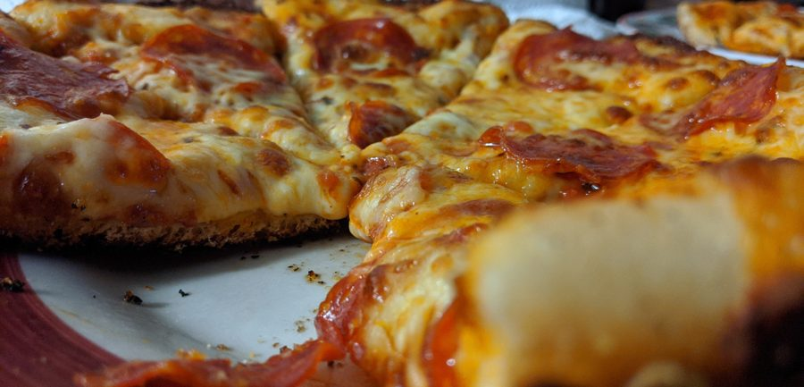
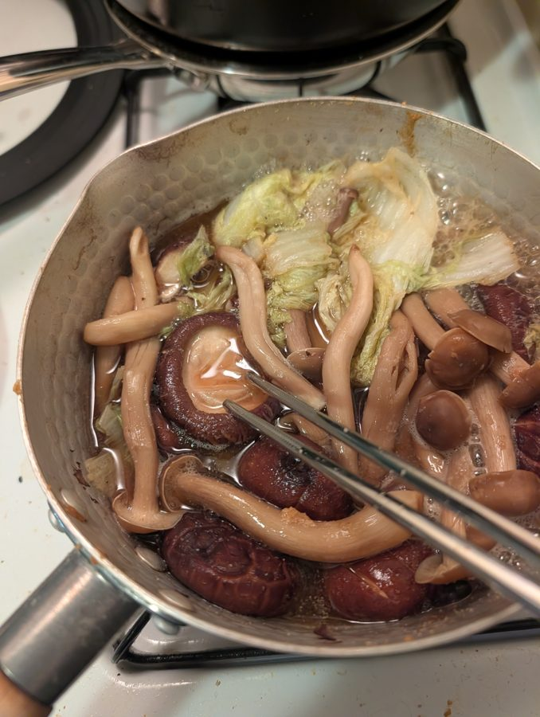

I'm a first-year PhD student in the Computer Science and Engineering department at the University of Michigan, studying computer architecture and working with Prof. Reetuparna Das. I'm interested in designing more energy-efficient accelerator architectures for HPC workloads. Right now I'm looking at how GPUs could support FP32-heavy HPC workloads by emulating FP32 in hardware with lower-precision (e.g., BF16) multipliers.
Before starting my PhD, I was a Server Performance Engineer at AMD (2023–2026) in the Server Performance Group, working on the EPYC line of server CPUs. I contributed to post-silicon bring-up of the Zen 5 architecture, characterizing memory bandwidth behavior across varied topology and core counts, and developed and maintained infrastructure for performance-monitoring and profiling tools across Zen5/Zen6 EPYC CPUs. I originally interned with the same team in the summer of 2022, analyzing EPYC CPU performance using Linux Perf and eBPF.
I graduated from Boston University in 2023 with a B.S. in Computer Engineering, Magna Cum Laude. While at BU, I was an undergraduate researcher in the Performance and Energy Aware Computing Lab (PEACLab) with Prof. Ayse Coskun, and in the Computer Architecture and Automated Design Lab (CAADLab) with Prof. Martin Herbordt. I was also a TA for Operating Systems and Computer Organization.
Outside of class, I was President of the BU High Performance Computing Club, where we organized HPC workshops and led BU’s participation in student cluster competitions (SC21 & SC22; we achieved the highest HPL score in SC22). I was also Treasurer of the Society of Hispanic Professional Engineers (SHPE).
I also love cooking new recipes, making coffee/tea, taking pictures, playing videogames, and listening to jazz.

